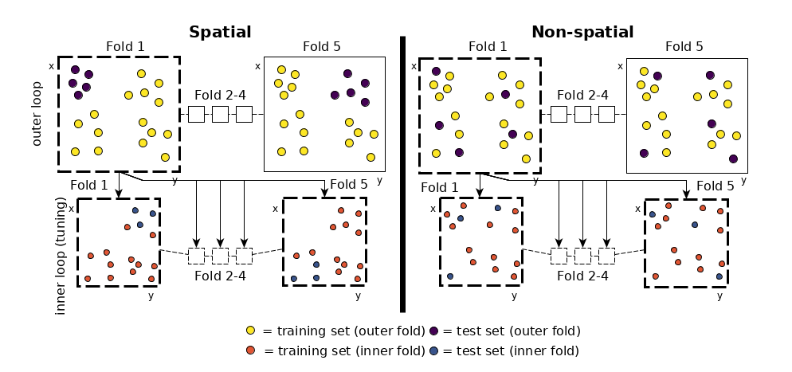

Handling of Spatial Data
Introduction
Spatial data is different from non-spatial data by having a spatial reference information attached to each observation.
This information is usually stored as coordinates, often named x and y.
Coordinates are either stored in UTM (Universal Transverse Mercator) or latitude/longitude format.
Treating spatial data sets like non-spatial ones leads to overoptimistic results in predictive accuracy of models (Brenning 2005). This is due to the underlying spatial autocorrelation in the data. Spatial autocorrelation does occur in all spatial data sets. Magnitude varies depending on the characteristics of the data set. The closer observations are located to each other, the more similar they are.
If common validation procedures like cross-validation are applied to such data sets, they assume independence of the observation upfront to provide unbiased estimates. However, this assumption is violated in the spatial case due to spatial autocorrelation. Subsequently, non-spatial cross-validation will fail to provide accurate performance estimates.

By doing a random sampling of the data set (i.e., non-spatial sampling), training and test set data are often located directly next to each other (in geographical space). Hence, the test set will contain observations which are somewhat similar (due to spatial autocorrelation) to observations in the training set. This leads to the effect that the model, which was trained on the training set, performs quite well on the test data because it already knows it to some degree.
To reduce this bias on the resulting predictive accuracy estimate, Brenning 2005 suggested using spatial partitioning in favor of random partitioning (see Figure 1). Here, spatial clusters are equal to the number of folds chosen. These spatially disjoint subsets of the data introduce a spatial distance between training and test set. This reduces the influence of spatial autocorrelation and subsequently also the overoptimistic predictive accuracy estimates. The example in Figure 1 shows a five-fold nested cross-validation setting and exhibits the difference between spatial and non-spatial partitioning. The nested approach is used when hyperparameter tuning is performed.
How to use spatial partitioning in mlr
Spatial partitioning can be used when performing cross-validation.
In any resample call you can choose SpCV or SpRepCV to use it.
While SpCV will perform a spatial cross-validation with only one repetition, SpRepCV gives you the option to choose any number of repetitions.
As a rule of thumb, usually 100 repetitions are used with the aim to reduce variance introduced by partitioning.
There are some prerequisites for this:
When specifying the task, you need to explicitly state that the task is spatial one by setting spatial = TRUE.
Next, there need to be two variables named x and y in your data set that store the coordinate information.
If this applies, the coordinates will be used for spatial partitioning if SpCV or SpRepCV are selected as resampling strategies.
Also, these variables will be removed for any train() or predict() call. This means they will not be used as predictors within the specified learner but only to set up the sampling for the cross-validation task.
Coordinates must be named x and y to be used for spatial partitioning.
If named differently and spatial = TRUE was set during task creation, an error will occur.
Examples
The bc.task.spatial data set serves as an example data set for spatial modeling tasks in mlr.
The task attribute spatial is set to TRUE to indicate that the data set also stores coordinate information.
In this example, the "Random Forest" algorithm (package ranger) is used to model a binomial response variable.
For performance assessment, a repeated spatial cross-validation with 5 folds and 10 repetitions is chosen.
Spatial Cross-Validation
data("bc.task.spatial")
bc.task.spatial
#> Supervised task: basque
#> Type: classif
#> Target: diplo01
#> Observations: 944
#> Features:
#> numerics factors ordered functionals
#> 9 2 0 0
#> Missings: FALSE
#> Has weights: FALSE
#> Has blocking: FALSE
#> Is spatial: TRUE
#> Classes: 2
#> 0 1
#> 720 224
#> Positive class: 1
learner.glm = makeLearner("classif.ranger", predict.type = "prob")
resampling = makeResampleDesc("SpRepCV", fold = 5, reps = 10)
set.seed(123)
out = resample(learner = learner.glm, task = bc.task.spatial,
resampling = resampling, measures = list(auc))
#> Resampling: repeated spatial cross-validation
#> Measures: auc
#> [Resample] iter 1: 0.8564829
#> [Resample] iter 2: 0.8903922
#> [Resample] iter 3: 0.8018739
#> [Resample] iter 4: 0.8170660
#> [Resample] iter 5: 0.8626639
#> [Resample] iter 6: 0.8888889
#> [Resample] iter 7: 0.9200000
#> [Resample] iter 8: 0.8844538
#> [Resample] iter 9: 0.7644215
#> [Resample] iter 10: 0.7704265
#> [Resample] iter 11: 0.8883220
#> [Resample] iter 12: 0.8430926
#> [Resample] iter 13: 0.7603609
#> [Resample] iter 14: 0.7996886
#> [Resample] iter 15: 0.9112150
#> [Resample] iter 16: 0.8575808
#> [Resample] iter 17: 0.8758170
#> [Resample] iter 18: 0.9722531
#> [Resample] iter 19: 0.7683578
#> [Resample] iter 20: 0.7707363
#> [Resample] iter 21: 0.8282783
#> [Resample] iter 22: 0.8040078
#> [Resample] iter 23: 0.8559476
#> [Resample] iter 24: 0.8466709
#> [Resample] iter 25: 0.8556985
#> [Resample] iter 26: 0.9694784
#> [Resample] iter 27: 0.8534002
#> [Resample] iter 28: 0.8696655
#> [Resample] iter 29: 0.7530708
#> [Resample] iter 30: 0.7707363
#> [Resample] iter 31: 0.7859410
#> [Resample] iter 32: 0.8797678
#> [Resample] iter 33: 0.7657106
#> [Resample] iter 34: 0.8925759
#> [Resample] iter 35: 0.9153037
#> [Resample] iter 36: 0.8602616
#> [Resample] iter 37: 0.8804180
#> [Resample] iter 38: 0.7662884
#> [Resample] iter 39: 0.7716682
#> [Resample] iter 40: 0.9719888
#> [Resample] iter 41: 0.7636481
#> [Resample] iter 42: 0.7815193
#> [Resample] iter 43: 0.9147196
#> [Resample] iter 44: 0.8892013
#> [Resample] iter 45: 0.8720978
#> [Resample] iter 46: 0.8436748
#> [Resample] iter 47: 0.7144397
#> [Resample] iter 48: 0.7679477
#> [Resample] iter 49: 0.8233804
#> [Resample] iter 50: 0.7238220
#>
#> Aggregated Result: auc.test.mean=0.8379085
#>
mean(out$measures.test$auc)
#> [1] 0.8379085
We can check for the introduced spatial autocorrelation bias here by performing the same modeling task using a non-spatial partitioning setting.
To force non-spatial cross-validation here, variables x and y need to be removed from the data set because they are not used for partitioning when using RepCV and also should not be used as predictors.
Additionally, the spatial task attribute needs to be set to FALSE.
Finally, RepCV is chosen instead of SpRepCV.
Non-Spatial Cross-Validation
data("bc.task.spatial")
bc.task.spatial
#> Supervised task: basque
#> Type: classif
#> Target: diplo01
#> Observations: 944
#> Features:
#> numerics factors ordered functionals
#> 9 2 0 0
#> Missings: FALSE
#> Has weights: FALSE
#> Has blocking: FALSE
#> Is spatial: TRUE
#> Classes: 2
#> 0 1
#> 720 224
#> Positive class: 1
bc.task.spatial$task.desc$spatial = FALSE
bc.task.spatial$env$data$x = NULL
bc.task.spatial$env$data$y = NULL
learner.glm = makeLearner("classif.ranger", predict.type = "prob")
resampling = makeResampleDesc("RepCV", fold = 5, reps = 10)
set.seed(123)
out = resample(learner = learner.glm, task = bc.task.spatial,
resampling = resampling, measures = list(auc))
#> Resampling: repeated cross-validation
#> Measures: auc
#> [Resample] iter 1: 0.8967930
#> [Resample] iter 2: 0.9045999
#> [Resample] iter 3: 0.9294306
#> [Resample] iter 4: 0.8802067
#> [Resample] iter 5: 0.9297806
#> [Resample] iter 6: 0.9167055
#> [Resample] iter 7: 0.9145773
#> [Resample] iter 8: 0.9190111
#> [Resample] iter 9: 0.9230211
#> [Resample] iter 10: 0.8920038
#> [Resample] iter 11: 0.9174018
#> [Resample] iter 12: 0.9216362
#> [Resample] iter 13: 0.8649985
#> [Resample] iter 14: 0.9400488
#> [Resample] iter 15: 0.9335277
#> [Resample] iter 16: 0.8901363
#> [Resample] iter 17: 0.8874161
#> [Resample] iter 18: 0.9116547
#> [Resample] iter 19: 0.9056988
#> [Resample] iter 20: 0.9353667
#> [Resample] iter 21: 0.9007716
#> [Resample] iter 22: 0.9178832
#> [Resample] iter 23: 0.9260784
#> [Resample] iter 24: 0.8679113
#> [Resample] iter 25: 0.9532938
#> [Resample] iter 26: 0.8807246
#> [Resample] iter 27: 0.9007646
#> [Resample] iter 28: 0.9112245
#> [Resample] iter 29: 0.9021704
#> [Resample] iter 30: 0.9442953
#> [Resample] iter 31: 0.9243403
#> [Resample] iter 32: 0.9407455
#> [Resample] iter 33: 0.8723823
#> [Resample] iter 34: 0.9146044
#> [Resample] iter 35: 0.8980796
#> [Resample] iter 36: 0.9012854
#> [Resample] iter 37: 0.9103448
#> [Resample] iter 38: 0.9683020
#> [Resample] iter 39: 0.9169096
#> [Resample] iter 40: 0.8891844
#> [Resample] iter 41: 0.8992375
#> [Resample] iter 42: 0.8888889
#> [Resample] iter 43: 0.9168440
#> [Resample] iter 44: 0.9027697
#> [Resample] iter 45: 0.9038690
#> [Resample] iter 46: 0.9262346
#> [Resample] iter 47: 0.8470183
#> [Resample] iter 48: 0.8931188
#> [Resample] iter 49: 0.9615858
#> [Resample] iter 50: 0.9296015
#>
#> Aggregated Result: auc.test.mean=0.9104896
#>
mean(out$measures.test$auc)
#> [1] 0.9104896
The introduced bias (caused by spatial autocorrelation) in performance in this example is around 0.07 AUROC.
Notes
-
Usually, coordinates are not used as predictors in spatial modeling. If you insist on using them and also want to perform spatial cross-validation, add them to the data set with a different name than
xory, e.g.x1andy1. That way they will be treated as normal predictors. -
Some models are more affected by spatial autocorrelation than others. In general, it can be said that the more flexible a model is, the more it will profit from underlying spatial autocorrelation. Simpler models (e.g., GLM) will show less overoptimistic performance estimates.
-
The concept of spatial cross-validation was originally implemented in package sperrorest. This package comes with even more partitioning options and the ability to visualize the spatial grouping of folds. We plan to integrate more functions from sperrorest into
mlrso stay tuned! -
For more detailed information, see Brenning 2005 and Brenning2012.
Complete code listing
The above code without the output is given below:
library("mlr")
data("bc.task.spatial")
bc.task.spatial
learner.glm = makeLearner("classif.ranger", predict.type = "prob")
resampling = makeResampleDesc("SpRepCV", fold = 5, reps = 10)
set.seed(123)
out = resample(learner = learner.glm, task = bc.task.spatial,
resampling = resampling, measures = list(auc))
mean(out$measures.test$auc)
data("bc.task.spatial")
bc.task.spatial
bc.task.spatial$task.desc$spatial = FALSE
bc.task.spatial$env$data$x = NULL
bc.task.spatial$env$data$y = NULL
learner.glm = makeLearner("classif.ranger", predict.type = "prob")
resampling = makeResampleDesc("RepCV", fold = 5, reps = 10)
set.seed(123)
out = resample(learner = learner.glm, task = bc.task.spatial,
resampling = resampling, measures = list(auc))
mean(out$measures.test$auc)